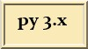

IDE (vývojové prostředí)

je téma, které bylo v emailové konferenci několikrát přetřásáno. Spíše než neustále o tom psát do konference, přijde mi lepší přehled/zkušenosti/kritéria vypsat tady.
Obsah
Vlastnosti IDE pro Python
Samozřejmost
- Zvýrazňování syntaxe
- Auto-odsazování
Slušné
- Code completion (automatické dokončování příkazů, názvu funkcí, proměnných)
- Code folding (skrývání řádek kódu)
- Integrovaný Python shell
- Call tips (tzn. nápověda na dané funkci v tooltipu)
- Class browser [explorer] (přehled tříd, metod)
- Multiplatformní: Windows, Linux, MacOsx, FreeBsd, a další
- Práce s různými kódováními
Profi
- Podpora refaktoringu
- Integrovaný debugger
- Tvorba GUI
- Podpora UML
- Auto todo seznamy
- Kontrola kódu (např. pomocí PyChecker)
- Nástroj pro tvorbu regulárních výrazů (Kiki)
- Podpora generování dokumentace (pyDoc?)
- Vizuální podpora unit testů (pyUnit)
Editory
IDLE
IDLE (Integrated DeveLopment Environment) - přímo přibalené v Pythonu. Vcelku pěkné a užitečné prostředí nejen pro začátečníky.
Eclipse
http://www.eclipse.org s pluginem http://pydev.sourceforge.net/
Eclipse má ovšem jednu nevýhodu: je napsaná v Jave a vyžaduje tedy instalaci JVM. Naštěstí není napsána ve Swingu, takže GUI je na Javu poměrně svižné.
jEdit
http://www.jedit.org/ je volně dostupný programátorský textový editor psaný v Javě, tudíž použitelný v různých OS. Na nových strojích je docela svižný. Podpora více než 130 jazyků. Někteří uživatelé mu dávají přednost před Eclipse, protože jEdit není tak těžkopádný. Hlavní autor, Slava Pestov, se zhruba v červenci 2005 rozhodl pro otevření dalšího vývoje ustanovením jádra vývojářského týmu.
SPE
http://www.stani.be/python/spe/blog/ - velice pěkný, s hodně vlastnostmi. Používá wxGlade pro tvorbu GUI.
Eric4
http://www.die-offenbachs.de/eric/index.html - Ide pro Python a Ruby.. Využívá QT4 .. A usnadňuje práci s ním. Bývá přibalen k PyQt_PySide
DrPython
http://drpython.sourceforge.net/ - Prostředí vhodné zejména pro začátečníky. Jednoduché na používání, ale výkonné. Navíc je celé napsané v Pythonu za využití wxPython... Vymoženosti: zvýrazňování syntaxe, automatické odsazování, vestavěný Python shell, kontrola syntaxe a parity závorek a nakonec ještě source browser.
PSPad
PSPad http://www.pspad.com - Pouze pro windows, přesto skvělý nejen pro začátečníky, výborná práce se všemi kódování češtiny. Rychlý, jednoduchý, praktický, multifunkční.
Scintilla Text Editor (SciTE)
http://scintilla.sourceforge.net/SciTE.html
- Multiplatformní
- Open Source
- Automatická podpora cca: 33 programovacích jazyků včetně Pythonu
- Podpora 5 kódování
- Malý a velice rychlý i na pomalejších počítačích
- Uživatelsky plně konfigurovatelný, pomocí konfiguračních souborů je možné změnit téměř vše (vzhled, chování, makra, doplňování, zvýrazňování atp..)
Netbeans IDE
- Podpory Pythonu přes plugin
- Poměrně velký a pomalu se startující editor
- Open Source
- Naprogramovaný v Javě
- Nabízí autodoplňování všeho možného
- class browser
- etc..
VIM
VIM http://www.vim.org - Jeden z nejpoužívanějších a nejlepších editorů pro Linux. Klon existuje i pro Windows. Naučit se ho však není jednoduché.
Anjuta DevStudio
http://anjuta.sourceforge.net/ - Hlavní IDE GTK/GNOME.
KDevelop
http://www.kdevelop.org/ - Hlavní IDE KDE.
Komodo
Editor Komodo je postaven na aplikačním frameworku Mozilla, ve kterém je například vytvořen i prohlížeč Firefox, nebo e-mailový klient Thunderbird. Multiplatformní (Windows, Linux, Mac OS X), existuje v několika variantách:
Wing IDE 101
http://www.wingware.com/wingide-101 - Verzia kvalitného IDE Wing Proffesional, ktorá je s obmedzenými vlastnosťami zadarmo.
Další seznamy
se dají samozřejmě najít na anglicky psaných webech
Python IDE --Magix.cz, Mon, 31 Mar 2014 10:32:30 +0200 reply
Ahoj, ze začátku jsem používal integrovaný IDLE, ale při psaní delšího kódu mi chyběl code-folding a tak jsem hledal a instaloval a následně odinstalovával různé IDE až jsem našel Ninju. Ještě se s ním seznamuju, ale vypadá to dobře !